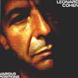

 |
I'M YOUR MAN
If
you want a lover, I'll do anything you ask me to. And you want
another kind of love, I'll wear a mask for you. If you want a
partner, take my hand. Or if you want to strike me down in anger,
here I stand. I'm your man.
If you want a boxer, I will step into the ring
for you. And if you want a doctor, I'll examine every inch of you.
If you want a driver, climb inside. Or if you want to take me for
a ride, you know you can. I'm your man.
Ah, the moon's too bright, The chain too tight.
The beast won't go to sleep. I've been running through these
promises to you that I made and I could not keep. But a man never
got a woman back, not by begging on his knees. Or I'd crawl to you
baby and I'd fall at your feet. And I'd howl at your beauty like a
dog in heat. And I'd tear at your sheet. I'd say please, please.
I'm your man.
And if you've got to sleep a moment on the
road, I will steer for you. And if you want to work the street
alone, I'll disappear for you. If you want a father for your
child, or only want to walk with me a while across the sand, I'm
your man.
|